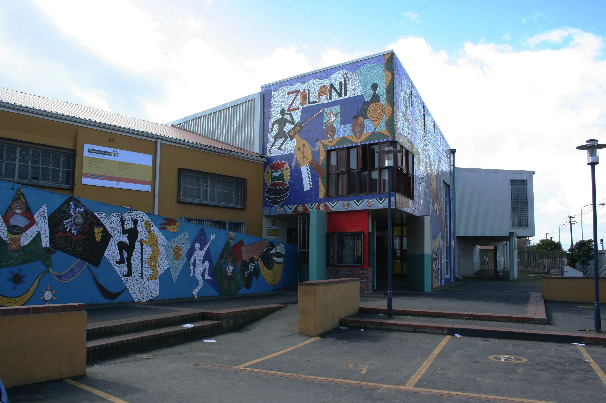

Started in a living room in Kewtown. Still run the same way.
JAS Foundation exists because one community member opened her home in 2019 and asked a simple question: what if the people who needed this care most were also the ones trained to give it?
Our story
JAS Foundation began in 2019 as a pro-bono Bowen therapy clinic run from a community member's home in Kewtown, Cape Town. Word spread the way this kind of care always does — through neighbours who felt the difference and told the next person.
In 2024, that grew into a second site: a co-pay partnership with the Braitex factory in Atlantis, where day and night shift workers alike can now access treatment. Today we're building the next stage — training the practitioners who will carry this work far beyond the two communities where it started.

What we believe
- Care should be local. The best person to treat a community is often someone from that community.
- The body can be trusted. Our training exists to support the nervous system's own capacity to heal — not to override it.
- Training is the multiplier. One pair of trained hands can treat thousands of people over a career. That's where we put our effort.
- Dignity, not charity. Our co-pay model at Braitex and our pro-bono clinic in Kewtown are both designed around what each community can sustain.
Who runs it
We're a small team — this page is intentionally simple so it's easy to keep current as we grow.
Replace the entries below with real names, roles, and a photo or simple portrait for each person. Two or three people is plenty — donors and partners mostly want to know there are real hands behind this.
Founder & Director
[Add one line on their background]Lead Trainer
[Add one line on their background]Community Liaison, Kewtown
[Add one line on their background]Who we work alongside
Want to help this reach the next town?
Every practitioner we train is someone who can treat a community for decades.